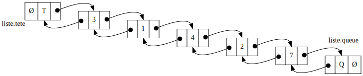
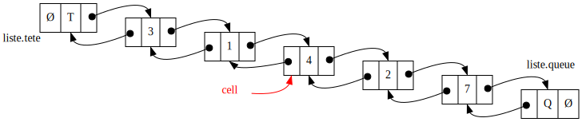
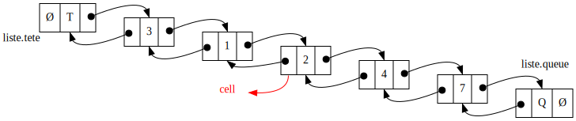

Le tri du cocktail shaker (10 pts)
Consignes générales pour l’exercice
On va implanter dans cet exercice l’algorithme préféré de James Bond : le tri du cocktail shaker.
Si on suppose qu’on veut trier un tableau d’entiers par ordre croissant, le principe de cet algorithme peut être résumé simplement comme suit.
- On parcourt le tableau de la première à la dernière case, en
échangeant deux à deux les cases qui ne sont pas dans le bon ordre
(croissant) : dit autrement, si
tab[i] > tab[i+1]alors on échangetab[i]ettab[i+1]; - une fois arrivé à la fin du tableau, si aucun échange n’a eu lieu pendant le parcours précédent, alors le tableau est trié donc la fonction est terminée ;
- sinon, on re-parcourt le tableau cette fois-ci en sens inverse, en
partant de la fin pour remonter vers le début, en échangeant là-aussi
les cases consécutives qui ne sont pas dans l’ordre croissant ;
précision : consécutives veut dire qu’on compare bien
tab[i]ettab[i+1](pastab[i-1]) ; - une fois revenu au début du tableau, si aucun échange n’a eu lieu pendant le parcours précédent, alors le tableau est trié donc la fonction est terminée ;
- sinon, on repart à l’étape 1 pour re-parcourir le tableau du début à la fin, et ainsi de suite.
On fournit trois fichiers pour cet exercice :
- cocktail_tab.go contient la version tableau du tri ;
- cocktail_liste.go contient la version liste chaînée du tri ;
- cocktail.go contient le programme principal et des tests, vous n’avez pas besoin de le modifier.
Si vous appelez le programme simplement sans paramètre
(go run cocktail*.go), il lancera une série de tests sur
des tableaux et listes de petites tailles pour vous aider à repérer
visuellement vos erreurs.
Si vous appelez le programme avec l’option --brut
(go run cocktail*.go --brut), il lancera des tests bruts
sur beaucoup de tableaux et de listes de plus grandes tailles, pour vous
convaincre que vos fonctions sont correctes.
On va implanter cet algorithme d’abord avec des tableaux puis avec des listes doublement chaînées.
Implantation avec des tableaux
Toutes les fonctions demandées dans cette partie doivent être
complétées dans le fichier cocktail_tab.go.
On fournit dans ce fichier une fonction initTab qui
initialise un tableau d’entiers d’une taille donnée en le remplissant
avec des chiffres aléatoires, vous n’avez pas besoin de modifier cette
fonction.
Question 1 (3 pts)
Complétez la fonction
parcourirEchangerTab(tab []int, inv bool) bool qui prend en
paramètre le tableau d’entiers tab qu’on veut parcourir,
ainsi qu’un booléen inv qui vaut true ssi on
veut parcourir le tableau en « sens inverse » (c’est-à-dire en partant
de la fin et en remontant vers le début).
Cette fonction doit parcourir le tableau case par case dans le sens
dépendant de inv et échanger deux à deux les éléments
consécutifs qui ne sont pas par ordre croissant.
Elle renvoie un booléen valant true ssi il y a eu au
moins un échange pendant le parcours.
Question 2 (2 pts)
Compléter la fonction trierTab(tab []int) qui prend en
paramètre le tableau d’entiers à trier.
Cette fonction doit appeler parcourirEchangerTab tant
qu’il y a eu au moins un échange lors du parcours.
Cette fonction n’a aucun effet si le tableau contient moins de 2 éléments.
On doit alterner le sens du parcours à chaque appel en passant la
valeur appropriée pour inv.
La fonction doit s’arrêter dès qu’un parcours n’a donné lieu à aucun échange.
Implantation avec des listes chaînées
On va maintenant implanter exactement le même tri sur des listes doublement chaînées d’entiers à la place des tableaux d’entiers.
Toutes les fonctions demandées dans cette partie doivent être
complétées dans le fichier cocktail_liste.go.
On définit dans ce fichier le type cellule comme suit
:
type cellule struct {
val int // une cellule contient une valeur entière
prec *cellule // ainsi qu'un pointeur vers la cellulle précédente
suiv *cellule // et un pointeur vers la cellule suivante
}Ensuite, on définit le type liste comme une structure
contenant deux pointeurs :
type liste struct {
tete *cellule // pointeur vers l'élément fictif en tête
queue *cellule // pointeur vers l'élément fictif en queue
}Chaque liste sera donc équipée d’un élément fictif (sentinelle) en
tête et d’un élément fictif en queue : vous ne devez jamais
accéder ni à liste.tete.val ni à
liste.queue.val dans les fonctions qu’on vous demande
d’écrire, mais toujours comparer les pointeurs avec
liste.tete et liste.queue pour savoir si vous
êtes au bout de la liste.
On peut donc représenter une liste doublement chaînée par le schéma suivant :
 (où Ø symbolise
la « valeur » nil).
On donne une fonction initListe qui crée une liste
doublement chaînée vide, c’est-à-dire avec uniquement les éléments
fictifs en tête et en queue, qui sont chaînés entre eux.
On fournit également une fonction remplirListe qui prend
en paramètre une liste vide et un tableau contenant des entiers et qui
remplit la liste avec les mêmes valeurs dans le même ordre : par
exemple, le schéma ci-dessus représente une liste complétée après avoir
appelé remplirListe avec le tableau
[3, 1, 4, 2, 7] comme paramètre.
On donne aussi une fonction afficherListe qui affiche le
contenu de la liste sous le format
T <-> 3 <-> 1 <-> 4 <-> 2 <-> 7 <-> Q,
où T et Q représentent les éléments fictifs en
tête et en queue.
On fournit enfin une fonction
echangerCellules(cell *cellule) *cellule dont le but est
d’échanger la cellule cell avec sa suivante
cell.suiv, par modification des chaînages (donc sans
toucher aux valeurs), et qui renvoie un pointeur vers la « nouvelle »
cellule cell (pour être plus clair : vers la cellule qui
était cell.suiv au début de la fonction).
On considère comme prérequis que cell et
cell.suiv sont des cellules significatives (c’est-à-dire
pas les éléments fictifs en tête et en queue).
Par exemple, si on appelle echangerCellules(cell) avec
cell pointant sur la cellule contenant la valeur 4 dans la
liste exemple ci-dessous :
 (où Ø symbolise la « valeur »
nil).
Alors, après l’exécution de la fonction, on a échangé les cellules contenant 4 et 2, et on renvoie une référence vers la cellule contenant 2, comme illustré dans la figure ci-dessous :
 (où Ø symbolise la « valeur »
nil).
Question 3 (1 pt)
Compléter la fonction
listeVideOuSingleton(ldc liste) bool qui renvoie
true ssi la liste ne contient aucun ou qu’un seul élément
significatif (c’est-à-dire sans compter les éléments fictifs en tête et
queue).
Question 4 (3 pts)
Compléter la fonction
parcourirEchangerListe(ldc liste, inv bool) bool qui prend
en paramètre une liste et un booléen inv qui vaut
true ssi on veut parcourir la liste en « sens inverse »
(c’est-à-dire en partant de la queue et en remontant vers la tête).
Cette fonction doit parcourir la liste cellule par cellule dans le
sens dépendant de inv et échanger deux à deux les cellules
consécutives qui ne sont pas par ordre croissant. On utilisera
évidemment la fonction echangerCellules de la question
précédente pour échanger des cellules par modification des
chaînages, sans changer les valeurs.
Elle renvoie un booléen valant True ssi il y a eu au
moins un échange pendant le parcours.
Question 5 (1 pt)
Compléter la fonction trierListe(ldc liste) qui doit
trier la liste en appelant la fonction
parcourirEchangerListe de la question précédente tant qu’il
y a eu au moins un échange lors du parcours.
Cette fonction n’a aucun effet si la liste contient moins de 2 éléments.
On doit alterner le sens du parcours à chaque appel en passant la
valeur appropriée pour inv.
La fonction doit s’arrêter dès qu’un parcours n’a donné lieu à aucun échange.